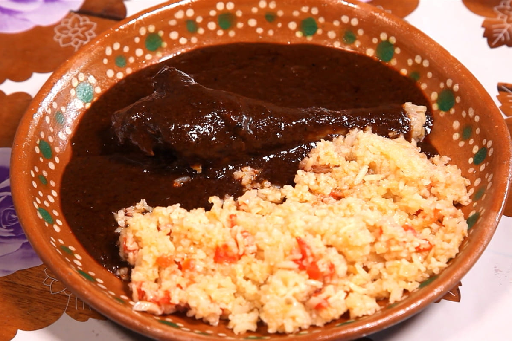
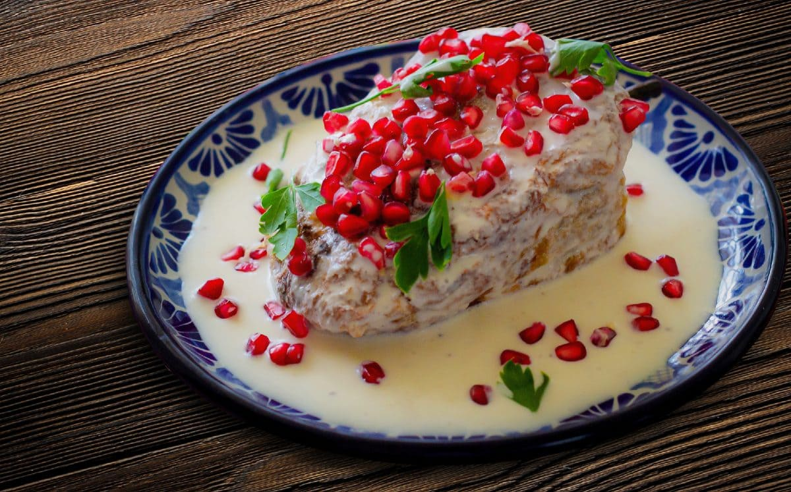

Carta Tradicional
Sabores que han trascendido generaciones, preparados con ingredientes frescos de nuestra región.
| Mole Poblano Especial - Receta artesanal con pollo orgánico. |
| Chile en Nogada - El clásico de temporada con nuez de castilla. |
| Cecina de Yecapixtla - Con su tradicional guarnición morelense. |
| Pozole Blanco - Estilo Guerrero con carne de primera. |
| Pipián Verde - Pepita de calabaza y especias secretas. |
| Cochinita Pibil - Directo del horno con cebolla morada. |
| Chiles Rellenos - Capeado perfecto y queso de rancho fundido. |
| Enmoladas de la Abuela - El confort food por excelencia. |